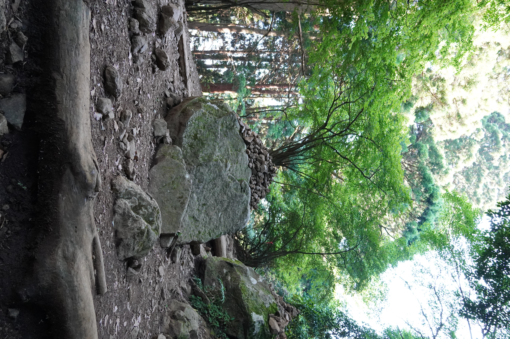
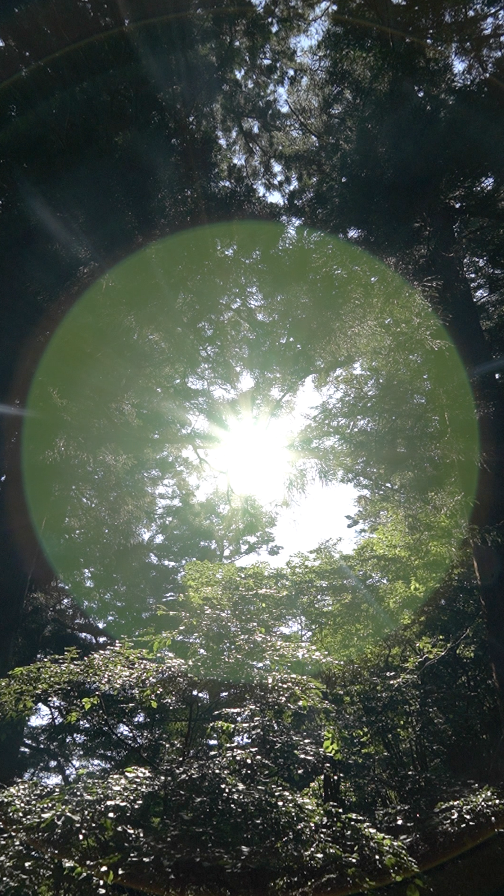

円環 - circle of unconsciousness


| 《円環 — circle of unconsciousness》は、吉田慧悟が2021年5月1日に発表した写真作品。 現代の技術は円環を簡潔に視覚化することが可能である。しかしその視覚化は、自然の中に潜む円環を十分に表現できているのか。この疑問点から、大山での映写を経て、人の営み、自然光の摂理による円環の可視化を試みた。 Photograph: Keigo Yoshida |


| 《円環 — circle of unconsciousness》は、吉田慧悟が2021年5月1日に発表した写真作品。 現代の技術は円環を簡潔に視覚化することが可能である。しかしその視覚化は、自然の中に潜む円環を十分に表現できているのか。この疑問点から、大山での映写を経て、人の営み、自然光の摂理による円環の可視化を試みた。 Photograph: Keigo Yoshida |